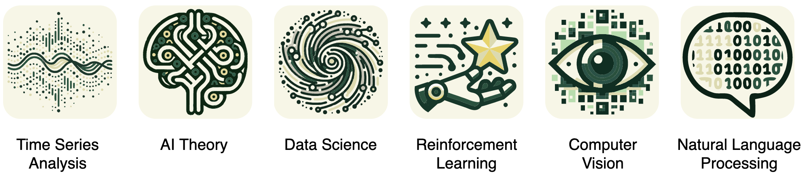

Xiang is an Assistant Professor in the Department of Computer Science at the University of North Carolina (UNC) at Charlotte.
Before joining UNC Charlotte, he was a postdoctoral fellow at Harvard University from March 2020 to July 2022. Xiang received his Ph.D. degree (in 2020) in Computer Science from the University of New South Wales (UNSW). His research interests lie in data mining and machine learning with applications in pervasive healthcare, medical time series, and Brain-Computer Interfaces (BCIs). Xiang's research outcomes have been published in prestigious conferences (such as ICLR, NeurIPS, and KDD) and journals (like Nature Computational Science).

UNC Charlotte Machine Learning Lab (CharMLab)
Xiang is serving as the director of CharMLab. CharMLab has 6 faculties, 18 PhDs, and 15 MS/UG/K-12 level students, working broadly on Optimization, CV, NLP, Time Series, RL, Graph, Efficient ML, and related applications in healthcare, smart home, brain-computer interface, on-device computing, IoT, etc.
Please feel free to contact for any collaboration.
Keywords: contrastive learning, medical time series, self-supervised
Keywords: graph neural networks, irregular time series, sparse time series, incomplete time series, message passing, ICU, sepsis detection
Keywords: pandemic, drug side effects, health inequity, demographics, FDA, FAERS
Keywords: EEG, brain-computer interface, non-invasive, person identification, attention mechanism